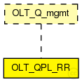

This documentation is released under the Creative Commons license
This documentation is released under the Creative Commons licenseTODO auto-generated module
The following diagram shows usage relationships between types. Unresolved types are missing from the diagram.
The following diagram shows inheritance relationships for this type. Unresolved types are missing from the diagram. 
| Name | Type | Default value | Description |
|---|---|---|---|
| slotLength | int | 3000ns | |
| slotNumber | int | 128 | |
| regTimeInt | int | 100ms | |
| regAckTimeOut | int | 500ms | |
| queueLimit | int | 100 | |
| datarateLimit | int | 0Mbps |
Limit the assigned bandwidth to scale down the simulation |
| Name | Value | Description |
|---|---|---|
| display | i=block/fork |
| Name | Direction | Size | Description |
|---|---|---|---|
| lowerLayerIn | input | ||
| lowerLayerOut | output | ||
| upperLayerIn | input | ||
| upperLayerOut | output |
// // TODO auto-generated module // simple OLT_QPL_RR like OLT_Q_mgmt { parameters: int slotLength @unit("ns") = default(3000ns); int slotNumber = default(128); int regTimeInt @unit("ms") = default(100ms); int regAckTimeOut @unit("ms") = default(500ms); int queueLimit = default(100); int datarateLimit @unit("Mbps") = default(0Mbps); // Limit the assigned bandwidth to scale down the simulation @display("i=block/fork"); gates: input lowerLayerIn; output lowerLayerOut; input upperLayerIn; output upperLayerOut; }
This documentation is released under the Creative Commons license